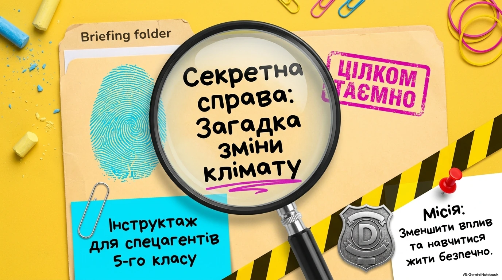
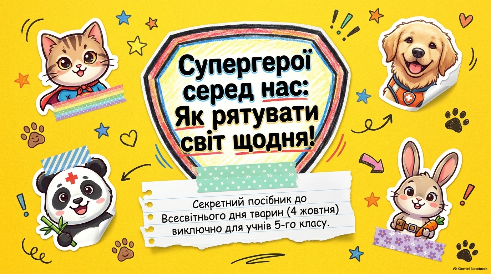
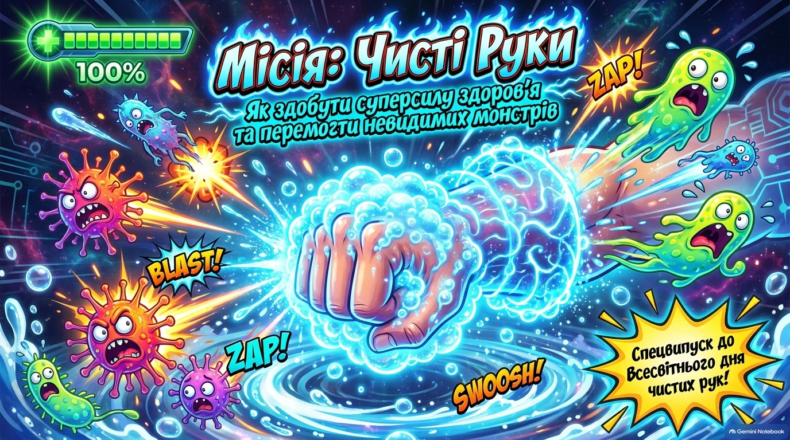
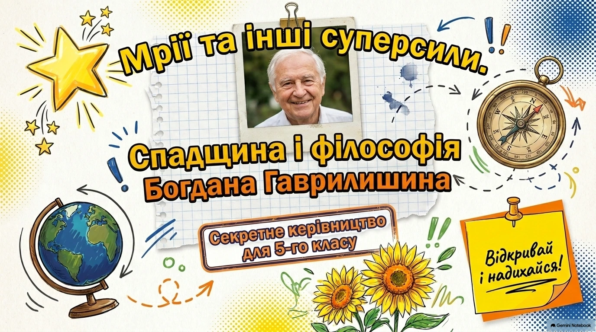

🍁
5 клас · інтерактивний матеріал
Осінні канікули без пригод: місія 5-А
Правила безпеки, шість ситуацій із поясненнями, чекліст для родини та пам’ятка для друку.
Перейти до матеріалу →Матеріали для спільних розмов і самостійних відкриттів. Обирай тему, переглядай матеріал у власному темпі та обговорюй важливе з дорослими.
5 клас · інтерактивний матеріал
Правила безпеки, шість ситуацій із поясненнями, чекліст для родини та пам’ятка для друку.
Перейти до матеріалу →5–9 класи · гра з життєвими ситуаціями
Як ощадливо використовувати енергію та безпечно користуватися електроприладами. Десять місій для обговорення.
Почати гру →
13 слайдів · самостійний перегляд
Екологія та відповідальне ставлення до довкілля.
Переглянути презентацію →
13 слайдів · самостійний перегляд
Турбота про тварин і добрі вчинки.
Переглянути презентацію →
10 слайдів · самостійний перегляд
Гігієна рук у форматі навчальної пригоди.
Переглянути презентацію →
15 слайдів · самостійний перегляд
Власні рішення, обіцянки та щоденні вчинки.
Переглянути презентацію →Нові презентації додаємо через наш чат. Учні можуть переглядати ці матеріали без реєстрації та встановлення PowerPoint.